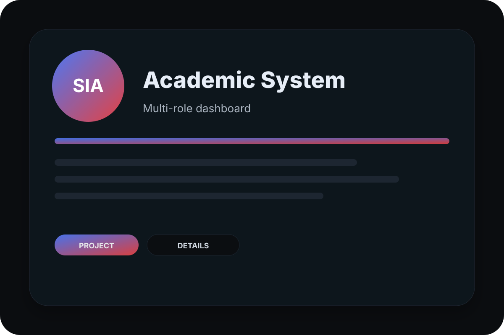
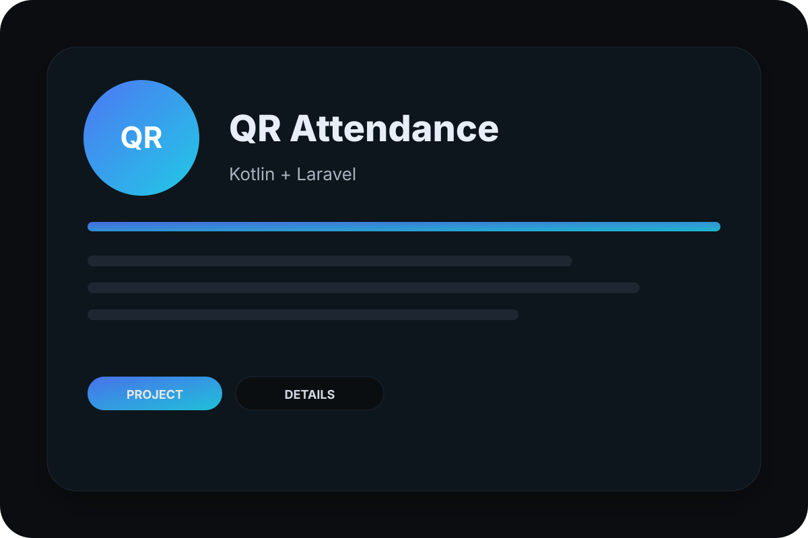

Layanan · Pendidikan
Jasa Pembuatan Website Sekolah (SD, SMP, SMA, SMK)
Website sekolah yang baik bukan yang paling mewah, melainkan yang masih aktif diperbarui setahun setelah diluncurkan. Saya membangun website sekolah di atas CMS Laravel buatan sendiri yang dirancang agar operator tata usaha atau guru dapat mengelola seluruh isinya tanpa pengetahuan pemrograman.
Masalah paling umum pada website sekolah
Sebagian besar website sekolah berhenti diperbarui beberapa bulan setelah peluncuran. Penyebabnya hampir selalu sama: setiap perubahan kecil harus melalui pengembang, sementara sekolah tidak punya anggaran perawatan rutin. Akibatnya halaman berita kosong, agenda kedaluwarsa, dan data guru tidak pernah diperbarui — justru saat website dibutuhkan untuk akreditasi atau penerimaan siswa baru.
CMS yang dirancang untuk operator sekolah
Website dibangun di atas CMS profil sekolah yang saya kembangkan menggunakan Laravel 10 dan Filament. Halaman disusun dari blok konten yang tinggal diseret: judul, teks, gambar, galeri, video, tombol, kartu, statistik, dan lainnya. Menu navigasi, susunan beranda, warna, font, hingga logo dapat diubah langsung dari panel admin. Tidak ada satu pun langkah yang memerlukan penulisan kode.
Fitur yang memang dibutuhkan sekolah
Modul berita dengan banyak foto dan tombol berbagi ke media sosial, agenda kegiatan, galeri kegiatan, profil guru dan staf, halaman jurusan atau ekstrakurikuler, serta informasi penerimaan peserta didik baru. Dashboard menampilkan statistik pengunjung harian hingga tahunan lengkap dengan halaman terpopuler, yang berguna sebagai bukti keaktifan website saat akreditasi.
Keamanan dan jejak pertanggungjawaban
Akses dibagi menjadi Super Admin dan Operator Konten sehingga tanggung jawab jelas. Login dapat dilindungi Autentikasi Dua Faktor melalui Google Authenticator, dan setiap aktivitas admin tercatat dalam audit log yang bisa dicetak maupun diekspor ke PDF dan Excel. Untuk sekolah negeri, catatan seperti ini penting saat pemeriksaan.
Satu sistem untuk semua jenjang
Struktur kontennya disiapkan agar dapat dipakai SD/MI, SMP/MTs, maupun SMA/SMK dengan penyesuaian dari panel admin. Sekolah dengan beberapa unit di bawah satu yayasan dapat memakai pendekatan yang sama, sehingga tampilan tetap konsisten tanpa perlu membangun sistem terpisah untuk setiap jenjang.
Yang Anda dapatkan
- Website sekolah responsif dengan tampilan yang bisa disesuaikan sendiri
- Page builder seret-lepas dengan 12 blok konten
- Modul berita, agenda, galeri, profil guru, dan halaman PPDB
- Media library terpusat untuk seluruh foto kegiatan
- Dashboard statistik pengunjung harian, bulanan, dan tahunan
- Audit log aktivitas admin dengan ekspor PDF dan Excel
- Autentikasi Dua Faktor (Google Authenticator) untuk keamanan login
- Toolbar aksesibilitas dan struktur yang ramah mesin pencari
- Pelatihan operator sekolah dan dukungan 30 hari
Contoh pengerjaan nyata

Website Profile Sekolah
CMS profil sekolah lengkap ala WordPress berbasis Laravel 10 & Filament. Admin mengelola…

Sistem Akademik Sekolah
Sistem akademik: siswa, guru, jadwal, nilai, absensi, dan laporan.

Absensi QR Sekolah (Kotlin + Laravel)
Absensi QR dengan validasi geolokasi, laporan, dan backend API Laravel.
Pertanyaan yang sering ditanyakan
Apakah guru tanpa latar belakang IT bisa mengelola website ini?
Apakah website ini mendukung PPDB online?
Bagaimana jika sekolah kami sudah punya website lama?
Apakah ada biaya perpanjangan setiap tahun?
Ingin website sekolah yang tetap aktif tahun depan?
Sampaikan jenjang sekolah dan fitur yang Anda butuhkan. Saya kirimkan demo panel admin beserta estimasi biayanya.